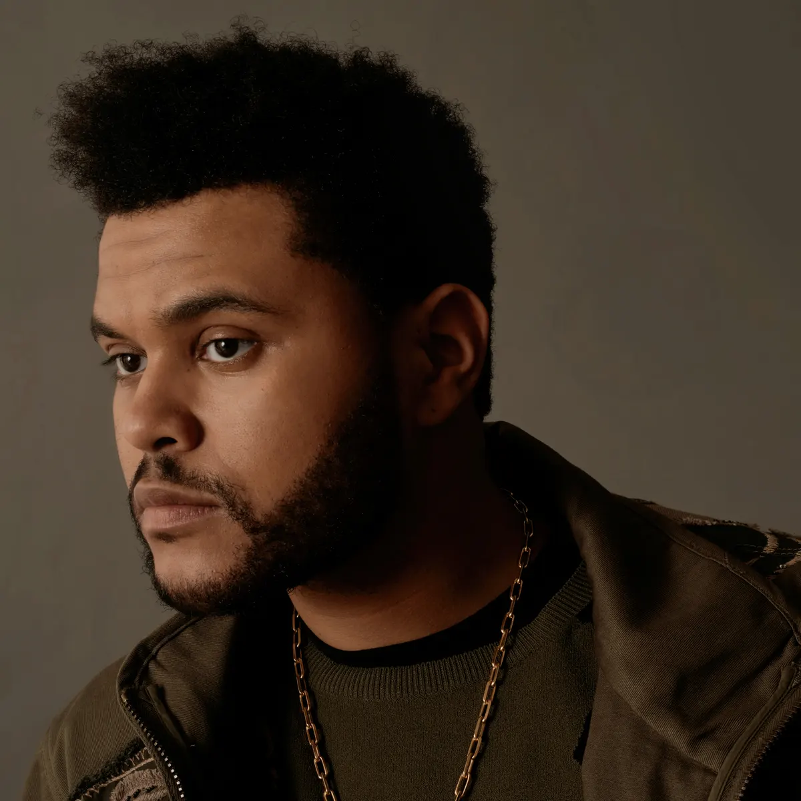

Yes and no. In the beginning, I was very insecure. I hated how I looked in pictures ... I was very camera shy. People like hot girls, so I put my music to hot girls and it just became a trend ... I just ran with it. No one could find pictures of me. It reminded me of some villain sh*t. But you can't escape the Internet.
Who is the Weeknd?
Bron
Early Years
Abel Makkonen Tesfaye, known professionally as the Weeknd, is a Canadian singer, songwrite and record producer. He was born and raised in Toronto Ontario and is the son of Ethiopian immigrants. His early musical influences ranged from traditional Ethiopian music to the King of Pop, Michael Jackson. In an interview with Vanity Fair, the Weeknd specifically cited the impact of Jackson's 1979 hit "Don't Stop 'til You Get Enough," describing it as "the song that helped me find my voice. It's the reason I sing.”

Youtube
After dropping out of highschool at the age of 17, Tesfaye always continued exploring his interest in music and began his career in 2009 by anonymously releasing music on YouTube. On Feb. 24, 2011, he uploaded three songs to YouTube under the username “xoxxxoooxo.” No identifying name or photos were associated with the account, other than a curiously misspelled band name: The Weeknd. Two weeks later, one of the songs, "What You Need," appeared on the notorious indie-music review site Pitchfork as a “Best New Track.”
Bron
The Weeknd was gaining attention. Not just because his voice sounded like a reincarnated Michael Jackson, but because of mystery clinging to those YouTube videos was captivating. Everyone wanted to know who was behind this new sound. Within a month, a full free download mixtape was released with the title House of Balloons.
Bron
First performance
Just 5 months after his YouTube debut, for the first time ever, he performed at the small venue Mod Club in his hometown Toronto. But his mystery continued with the appearance.

Bron
He then, released two more mixtapes "Thursday" and "Echoes of Silence." The Weeknd decided to gather those two with "House of Balloons" and create his first three-disc album "Trilogy." This helped push his career forward. As he worked with Drake on his 2011 album, Take Care, which featured several tracks from House of Balloons, and landed a deal with Universal's Republic Records.

Bron